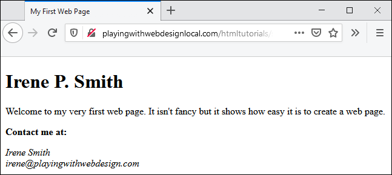

Your First HTML Page
Let’s get started by creating a web page. Then I'll go back and explain what all that markup stuff means. Are you ready? Let's go then!
Creating the page
It is extremely important that when you edit an HTML file that you do it in an application that can save files as plain text. If you don't have a program that is specifically created for working with HTML files, you can use Notepad on Windows, TextEdit on macOS, or the default text editor on Linux (on Ubuntu, it seems to be "Text Editor").
Open your text editor and enter the following text:
<!DOCTYPE html>
<html lang="en">
<head>
<meta charset="utf-8" />
<title>My First Web Page</title>
</head>
<body>
<h1>Irene P. Smith</h1>
<p>Welcome to my very first web page. It isn't fancy
but it shows how easy it is to create a web page.</p>
<h2>Contact me at:</h2>
<address>
<!-- Replace the following information with your own! -->
Irene Smith
irene@playingwithwebdesign.com
</address>
</body>
</html>
Save the file into a folder on your hard drive. Most editors will save the file you are editing when you press **Ctrl + S**.
A good choice for the location of the file on Microsoft Windows is a new folder in the “Documents” folder. Name it “myfirst.html” or something similar.
NOTE: Mac users can create a directory under the \Users\UserName\Documents and Linux users can create a new directory under /home/UserName/Documents.
Now that you have saved the file, give yourself a round of applause. You just created your first web page!
Viewing the results
Now open the file in whatever web browser you use. In most cases, Ctrl + O on Windows and Linux or Cmd + O on macOS will let you browse to a file on your local computer and open it. Your web page should look something like this:
Now that you've created your first page, let's talk about what all that "stuff" means and how much of it is necessary.